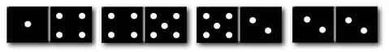

Item: tModelOtherRecursive1b
Stem:
Dominoes are rectangular-shaped tiles. Each tile is divided by a line across the
center that separates the piece into two ends. Each end may have between 0 and 6 dots (an end with 0 dots
appears blank). You can arrange dominoes in a chain by matching the number of dots on the ends where they touch.
Stephanie has a set of dominoes. She removes all of the dominoes that have an end with no dots (blanks) on them.
She selects four dominoes from the remaining pile and arranges them end to end, as shown in the figure below.

Moving from left to right, the sequence that corresponds to the above figure is:
1, 4, 4, 5, 5, 2, 2, 2
Which sequence represents the same set of dominoes, moving from right to left?
Options:
1, 4, 4, 5, 5, 2, 2, 2
2, 2, 2, 2, 2, 5, 5, 1
1, 5, 5, 2, 2, 2
2, 2, 2, 5, 5, 4, 4, 1
2, 2, 2, 5, 5, 4, 1
Key:
- Observable: 4.
Score: 1;
Evidence Value: 1.
-
Student:Right!
-
Teacher:The student got this item correct.
- Observable: 1.
Score: 0;
Evidence Value: 0.
-
Student:Not quite. That's the same sequence.
When a problem asks you to take a sequence that you
read from left to right, and read it from right to left, it means to reverse
it. In this case, the correct answer is 2,2,2,5,5,4,4,1.
-
Teacher:The student got this item correct.
- Observable: 5.
Score: 0;
Evidence Value: 0.
-
Student:Good try, but not quite. You left out one number in the middle!
The correct answer is 2,2,2,5,5,4,4,1.
-
Teacher:The student got this item correct.
- Observable: .
Score: 0;
Evidence Value: 0.
-
Student:Sorry, that's not right. When a problem asks you to take a sequence that you
read from left to right, and read it from right to left, it means to reverse
it. In this case, the correct answer is 2,2,2,5,5,4,4,1.
-
Teacher:The student got this item incorrect.
Metadata:
Item Node: tModelOtherRecursive1b,
Difficulty: 1.
Proficiencies: ModelOtherRecursive.